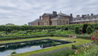
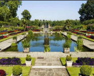
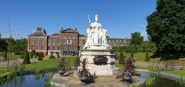
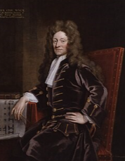
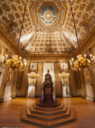
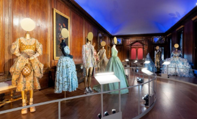
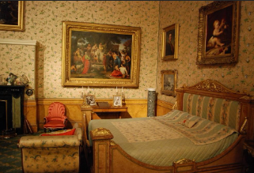
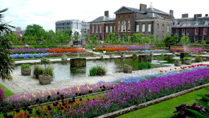

Kensington Palace for junior classes


Kensington Palace is a small and deliberately modest palace in the western part of London. It is the official residence of the Duke and Duchess of Gloucester, as well as the Duke and Duchess of Kent and their children.
Picture backgroundThe palace ensemble includes the Kensington Gardens, where you can walk around. There is a restaurant and a cafe on site.
Some of the rooms

One of the main rooms of the palace is the throne room, which was added in 1797.
The King's Gallery, a long room that houses the monarch's collection of paintings by various artists, is also a popular tourist attraction.
One of the earliest rooms in the palace is the state apartments of the king and queen (William III and Mary II). These rooms preserve all the household items, tapestries, statuettes, and personal belongings of the royal couple, as well as most of the interior design that can be seen by tourists.
Special attention should be paid to the rich collection of clothing from different eras, which is displayed in the halls of Kensington Palace. This includes women's hats, dresses, and men's suits, as well as the clothing of courtiers and servants. These items of clothing provide insight into the history of British fashion. The collection is complemented by the extensive collection of dresses belonging to Princess Diana, who resided at the palace from 1981 to 1997. This collection is showcased in a separate exhibition and tour within the palace.
There is also a special exhibition about Queen Victoria in the palace. It has her clothes and things from her life. They are in her rooms. The exhibition shows visitors about her time and her.
Kensington Palace for senior classes

Kensington Palace is one of the most visited attractions in London. Since the 17th century, it has been the official residence of the British royal family. Currently, it is a museum and the residence of the younger members of the royal family, including the Duke and Duchess of Gloucester, the Duke and Duchess of Kent, and the Prince and Princess of Kent.
Kensington Palace is one of the smallest palace-residences in the world, but its exposition as a museum is quite significant: the personal chambers and halls, the grand staircase and the interior decoration have been preserved - pictures of different eras, personal belongings of the royal family and household items.
The ensemble of the palace includes Kensington Gardens, where you can walk. There is a restaurant and a cafe on the territory.
Kensington Palace was originally a two-storey Jacobean mansion built by Sir George Copping in 1605 in the village of Kensington.
Shortly after William and Mary ascended the throne as co-rulers in 1689, they began searching for a residence that would be more suitable for William's asthma. They found this building and commissioned Sir Christopher Wren, the Inspector of the Royal Works, to immediately begin expanding the house.
Shortly thereafter, Queen Mary expanded her chambers by adding the Royal Gallery. William constructed the South Front, designed by Nicholas Hawksmoor, which included the Royal Gallery, where he displayed numerous paintings from his collection.
Mary II died of smallpox at the palace in 1694. In 1702, William fell from his horse at Hampton Court and was taken to Kensington Palace, where he succumbed to pneumonia.
After the death of William III, the palace became the residence of Queen Anne. She commissioned Christopher Wren to complete the construction of the wings that had been started by William and Mary. This led to the creation of the part of the palace known as the Royal Apartments, with the Royal Entrance and the staircase designed by Wren, which featured simple steps that allowed Anne to descend gracefully. These apartments were primarily used by the queen as a transition between her private quarters and the gardens. Queen Anne's most notable contribution to the palace was the creation of the gardens. By her order, in 1704, the Queen Anne built a greenhouse. Queen Anne died at Kensington Palace on August 1, 1714.
George I didn't save money when making new royal rooms. He made three new big rooms called the State Hall, the Dome Room, and the Quiet Room.
Interior and Rooms




Kensington Palace has both public and private rooms and homes inside the building and nearby. 50 people live in the palace. Besides the royal family, soldiers, workers, and civilians who pay rent also live there.
The State Rooms of the King and Queen
The state Apartments of the King and Queen are state rooms and private apartments historically used by various monarchs and spouses. The king's state apartments were used for diplomatic audiences and meetings, which were described as "luxurious" and "surprisingly few in number." The Queen's State Apartments were a domestic residence usually used by the couple for living and entertaining. The state apartments first opened to the public in 1899. The museum was periodically closed during the First and Second World Wars and reopened in 1949.
The entrance to the royal apartments is marked by the Royal Staircase, which is decorated with a painting by William Kent depicting George I's royal court, painted in 1724. The apartments have several reception rooms. In the reception room, there is a linden fireplace where the monarch received his ministers.
The secret room was one of Queen Caroline's favorite places to host guests. According to Kent, the Dome Room is "the most lavishly decorated room in the palace."
A special mention should be made of the rich collection of clothing from different eras, which is on display in the halls of Kensington Palace. This includes women's hats, dresses, and men's suits, as well as the clothing of courtiers and servants. These items of clothing provide a glimpse into the history of British fashion. The collection is completed by the extensive collection of dresses belonging to Princess Diana, who lived in the palace from 1981 to 1997. This collection is displayed separately in the palace and can be explored through a dedicated tour.
There is also a separate exhibition dedicated to Queen Victoria in the palace. It includes items from her wardrobe and household items that are displayed in her chambers, providing visitors with insights into the era and its prominent figure.
Picture backgroundAt the exit from the palace, visitors are greeted by the luxurious Kensington Gardens, which have been developed here since the 1760s. There is also a separate tour of the gardens, which includes information about the monarch's favorite walking and recreation areas and historical facts. The gardens are picturesque and, in addition to their historical significance, attract tourists as a place for leisurely walks and relaxation after a busy day.